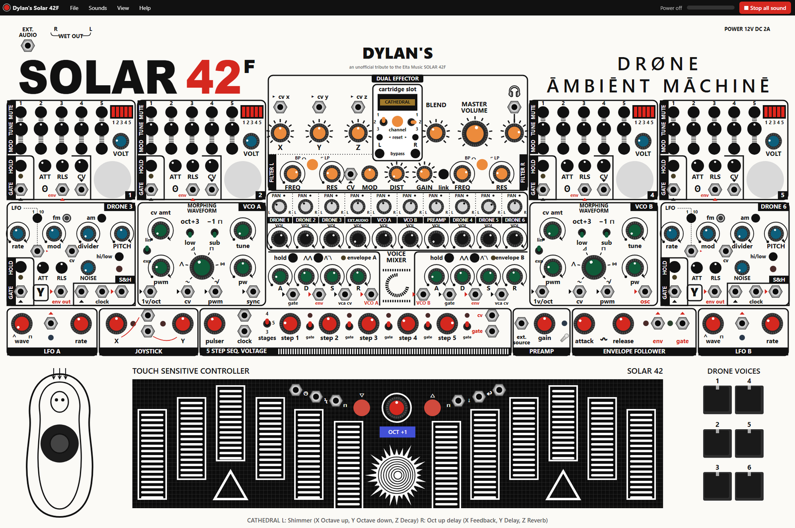

Dylan's SOLAR 42F
User's Guide · version 1.1 · an unofficial tribute to Elta Music's SOLAR 42F drone ambient machine

- Quick start
- The menu bar
- Knobs, buttons, switches
- Drone voices 1, 2, 4, 5
- Drone voices 3 and 6
- VCO A and B, envelopes
- The touch keyboard
- The voice mixer
- Filters and distortion
- The dual effector
- LFOs, joystick, sequencer
- Preamp and envelope follower
- Patch cables
- Things to try
- Keyboard shortcuts
- No sound?
- On the iPad
1. Quick start
- Open Dylan's Solar 42F from the icon on the Desktop.
- Click the big POWER button. The menu bar at the top now says Sound on.
- Pick Sounds > Warm drone chord. You should hear a slow, rich chord. The meter next to Sound on moves with it.
- Now change it: press the MUTE buttons on drone voices 1 and 2, turn their TUNE knobs and their VOLT knob.
- Click the red ■ Stop all sound (or press Esc) to silence everything.
- Try the other starter sounds in the Sounds menu: each one tells you, at the bottom of the screen, what to play and what to turn.
2. The menu bar
| Menu | What's in it |
|---|---|
| File | New puts every knob, switch and cable back where it started. Save this patch saves everything you've set as a file (in Downloads); Open a patch brings one back. Close closes the program. |
| Sounds | Seven starter sounds: each sets up the panel and starts playing, and a message tells you what to do next. Stop all sound lets go of everything. |
| View | Whole panel or Zoom in (then drag an empty part of the panel, or scroll, to move around). Full screen. Hide the patch cables if they're in the way. |
| Help | This User's Guide, the Quick start, the Keyboard shortcuts, Test the speakers (plays three notes straight to your speakers, skipping the synth) and About. |
| Right side | Power off / Sound on; the meter (how loud the sound leaving the synth is); ■ Stop all sound. |
Everything you set is kept: close the program and it opens the same way next time.
3. Knobs, buttons, switches
- Knobs: press on a knob and drag up to turn it right, down to turn it left. Hold Shift for small moves. The mouse wheel turns them too. Double-click a knob to put it back where it started.
- Round buttons (HOLD, MUTE, MOD, fm, am...): click to switch on (a white ring shows it's on), click again for off.
- Switches (the little levers): click to flip. Some have three positions; they step through them.
- Lights show what's happening: a voice's yellow light glows while it sounds, the LFO lights pulse with them, the sequencer's red lights show the step.
- Tooltips: rest the mouse on anything for a moment to see what it does.
4. Drone voices 1, 2, 4, 5 (the "classic" voices)
Each of these four voices is five sawtooth oscillators that hum together: 1 and 2 are low, 3 is in the middle, 4 and 5 are high. They drift a little in pitch over time, like the real analog circuit.
| Control | What it does |
|---|---|
| Pad 1, 2, 4, 5 (bottom right) | Plays the voice while you hold it (keys 1 2 4 5 too). |
| HOLD | Keeps the voice playing (its yellow light comes on) until you press it again. |
| MUTE 1–5 | Switches each oscillator off and on: mix and match them to make chords. The red OSC STATUS lights show which are playing. |
| TUNE 1–5 | Each oscillator's pitch (about an octave either way). |
| MOD 1–5 | When on, that oscillator's pitch follows the light on the photo sensor and the CV input (normally LFO A for voices 1 and 2, LFO B for 4 and 5), so it wobbles and bends. |
| VOLT | Transposes all five oscillators down together. Past halfway, they start modulating each other: a growling, FM-like sound. |
| ATT, RLS | How slowly the voice fades in (attack) and out (release). |
| CV knob | How strongly the CV input bends the oscillators that have MOD on. |
| Photo sensor (the big grey circle) | Hover the mouse over it to cast a shadow, press and hold to cover it: the oscillators with MOD on bend in pitch. Scroll over it to change the "room light". |
5. Drone voices 3 and 6
Different, wilder voices: a square-wave tone with its own LFO. Sirens, bird calls, space monsters, volleys of shots, surf and wind.
| Control | What it does |
|---|---|
| Pad 3 or 6, HOLD | Play while held / keep playing, as above. |
| rate, the 1/10 button | The LFO's speed; the button makes it ten times faster. |
| fm | The LFO bends the pitch up and down (sirens, birds). |
| am | The LFO chops the sound on and off (volleys, helicopters). |
| mod | How much the LFO does it. |
| divider | Mixes in lower, rougher sub-tones. |
| PITCH, hi/low | The tone's pitch, and its range. |
| NOISE | Blends in white noise (surf, wind). All the way up, with mod and divider up too, it's pure noise. |
| ATT, RLS | Fade in, fade out. |
| S&H (sample and hold) | Grabs a random value at every LFO beat (its red light shows it). Patch its output (the right S&H jack) into a pitch input for random melodies. |
6. VCO A and B, and their envelopes
Two oscillators you play from the touch keyboard. Each has an envelope (envelope A and B, under the mixer) that shapes every note.
| Control | What it does |
|---|---|
| The big waveform knob | Six stops: sine, triangle, saw, square, saw-to-inverted-saw, and sine-to-triangle (the last two are shaped by pw). |
| tune | The pitch, over one octave. |
| oct+3 / low | The low range, or three octaves up. |
| sub | Adds a square wave one octave down: a fatter sound. |
| pw, pwm | The square wave's width; pwm is how much LFO A (for VCO A) or LFO B (for VCO B) sweeps it. |
| cv amt, lin/exp | How much the cv input changes the pitch. On VCO B, with nothing plugged in, VCO A is there: turn VCO B's cv amt up for metallic FM sounds. |
| A D S R | Attack (how fast a note starts), Decay (how fast it falls), Sustain (how loud it stays while held), Release (how long it rings after you let go). |
| hold | Keeps the envelope open, as if a key were held: the VCO plays continuously. |
| The ⋀⋀ button (loop) | The envelope repeats by itself like an LFO, so the VCO pulses without anyone playing. |
7. The touch keyboard
- The twelve white striped plates are the twelve notes of an octave, C to B, left to right. Click one (or touch it on the iPad), or press A W S E D F T G Y H U J.
- They play VCO A and B together. To hear only one, turn the other's VOL down in the mixer.
- Pressing higher up a plate is more pressure (it comes out of the pressure jack).
- The red ▽ and △ buttons (or Z and X) change the octave; the blue display shows it. The red knob between them transposes by semitones.
8. The voice mixer
Ten channels, each with PAN (left or right) and VOL (how loud): drone 1, drone 2, drone 3, ext. audio, VCO A, VCO B, preamp, drone 4, drone 5, drone 6. If a voice is playing but silent, check its VOL here. EXT.AUDIO and PREAMP start at zero.
9. Filters and distortion
Everything from the mixer goes through two filters, one for the left side and one for the right, modeled on the Polivoks's rough, singing filter.
| Control | What it does |
|---|---|
| FREQ | The cutoff: turn it down for a darker, muffled sound, up for bright. |
| RES | Resonance: a ringing peak at the cutoff. Very high, the filter sings by itself. |
| BP / LP (orange button) | Low pass (off: keeps everything below the cutoff) or band pass (lit: only a band around it, thinner and vocal). |
| CV jack, MOD | Patch something into CV (an LFO, the joystick, an envelope) and MOD sets how much it sweeps the cutoff. |
| link | The CV moves the right filter too. |
| DIST, GAIN | Distortion: DIST mixes it in, GAIN sets how hard it bites. |
10. The dual effector
Effects on the left and the right channel, from one cartridge.
- Click the cartridge slot to change cartridge (right-click goes back): CATHEDRAL (reverbs), VIBROTREM (tremolo, vibrato, chorus), MAGIC (pitched delays), FILTER (wah and filters), TIME (delays), VIBE (phaser and flangers).
- The two little switches beside the slot pick each channel's program (1 at the top, 2 in the middle, 3 at the bottom). The line along the very bottom of the panel says which programs are on and what X, Y and Z do in them.
- X, Y, Z: the effect's three settings (for example Feedback, Delay and Reverb).
- BLEND: how much effect you hear. MASTER VOLUME: the overall volume. The knob under the headphones: the output level.
- bypass L / R: that side without the effect. reset: clears the echoes and reverb tails. channel (orange): both channels take the sound mixed to mono.
| Cartridge | Program 1 | Program 2 | Program 3 |
|---|---|---|---|
| CATHEDRAL | Shimmer (X octave up, Y octave down, Z decay) | Octave-up delay (X feedback, Y delay, Z reverb) | Space reverb (X feedback, Y delay, Z reverb) |
| VIBROTREM | Tremolo (X depth, Y rate, Z reverb) | Vibrato (same) | Chorus (same) |
| MAGIC | Pitch delay (X feedback, Y delay, Z pitch) | Reverse pitch delay (same) | Bell pitch delay (same) |
| FILTER | Auto wah (X amount, Y envelope, Z reverb) | HP/LP filter (X HP cutoff, Y LP cutoff, Z resonance) | Notch (X cut 1, Y cut 2, Z resonance) |
| TIME | Delay reverb (X feedback, Y delay, Z reverb) | Delay chorus (X feedback, Y delay, Z mod depth) | Delay vibrato (X feedback, Y delay/rate, Z mod depth) |
| VIBE | Phaser (X depth, Y rate, Z reverb) | Flanger (same) | Resonance flanger (X resonance, Y rate, Z mod depth) |
11. LFOs, joystick, sequencer
These don't make sound themselves: they move other things, through the instrument's own connections or your patch cables.
| Section | What it does |
|---|---|
| LFO A, LFO B | Slow waves (A is the slow one, B the fast one). wave: triangle to square; rate: speed. Their blue lights pulse with them. Without cables, A moves drone voices 1 and 2 (through MOD) and VCO A's pulse width; B does the same for voices 4 and 5 and VCO B. |
| Joystick | The little figure bottom left: drag its black knob. It stays where you leave it; double-click to center it. Its X and Y come out of the two JOYSTICK jacks (the X and Y knobs shift them). Patch them to a filter CV or a pitch input. |
| 5-step sequencer | Plays a repeating pattern of up to five voltages. pulser: speed. stages: 3, 4 or 5 steps. step 1–5: each step's voltage. The gate switch under each step: whether it sends a note. Patch cv to a VCO's 1v/oct and gate to its envelope's gate to hear a melody (or pick Sounds > Sequencer melody). |
12. Preamp and envelope follower
The real 42F has a contact microphone inside its case. Here it's your computer's microphone: click the 🎤 in PREAMP to turn it on (allow it when asked), turn up the PREAMP channel's VOL in the mixer, and the sound goes through the filters and effects. gain sets its level. The envelope follower turns how loud it is into a voltage (env) and a gate while there's sound: patch them to make your voice open the filter or trigger a voice.
13. Patch cables
- Outputs have a small red arrow; inputs a black one.
- Drag from an output jack to an input jack (or the other way) to connect them. An input takes one cable; an output can feed several.
- Drag a plug off an input to move it somewhere else; drop it on empty space to remove it. Click a cable to remove it.
- With nothing plugged in, many inputs already have something connected inside (rest the mouse on a jack to see what).
14. Things to try
- A shifting chord: HOLD drone voice 1, switch MOD on for oscillators 3 and 5, and slowly turn LFO A's rate.
- Random melodies: patch drone 3's S&H output to VCO A's 1v/oct, switch envelope A's loop on.
- Hand-played filter: patch joystick X to the filter CV, turn MOD up, set the filters to BP with high RES, and move the joystick.
- Metallic bells: play the keyboard with VCO B's cv amt turned up (VCO A modulates it), through MAGIC's Bell pitch delay.
- Your voice in space: turn on the 🎤, raise PREAMP's VOL, and pick CATHEDRAL's Shimmer with BLEND high.
15. Keyboard shortcuts
| A W S E D F T G Y H U J | The touch keyboard (C to B) |
| Z / X | Keyboard octave down / up |
| 1 … 6 | Drone voice pads (play while held) |
| Esc | Stop all sound (or close the guide) |
| Shift + drag | Fine knob moves |
| F11 | Full screen |
16. No sound?
- Is the power on? The menu bar should say Sound on. If it says Power off, close the program and open it again, then click POWER.
- Is a voice started? Pick Sounds > Warm drone chord. Knobs alone don't make sound.
- Does the meter move? (the bar next to Sound on)
- No: check the voice's VOL in the mixer, and MASTER VOLUME and the knob under the headphones.
- Yes, but you hear nothing: the synth is working, and Windows is sending the sound somewhere you're not listening. Use Help > Test the speakers. Then click the speaker icon by the clock and check the output. If it's set to CABLE Input (the VB-Audio cable from your Clubhouse setup), you'll only hear it if "Listen to this device" is on for CABLE Output (see the note "Clubhouse music bot - sound setup" on your Desktop), or pick your Speakers/Headphones while you play the synth.
- Still nothing: check the computer's volume isn't muted, and that no other program has taken over the speakers.
17. On the iPad
- Get it from Dylan's App Store (Music), then Share > Add to Home Screen. Hold the iPad sideways.
- Touch knobs and drag up and down; touch the plates with several fingers; double-tap a knob to reset it.
- The View > Zoom in menu makes the controls bigger; drag an empty part of the panel to move around.
- It plays even with the ring/silent switch on.